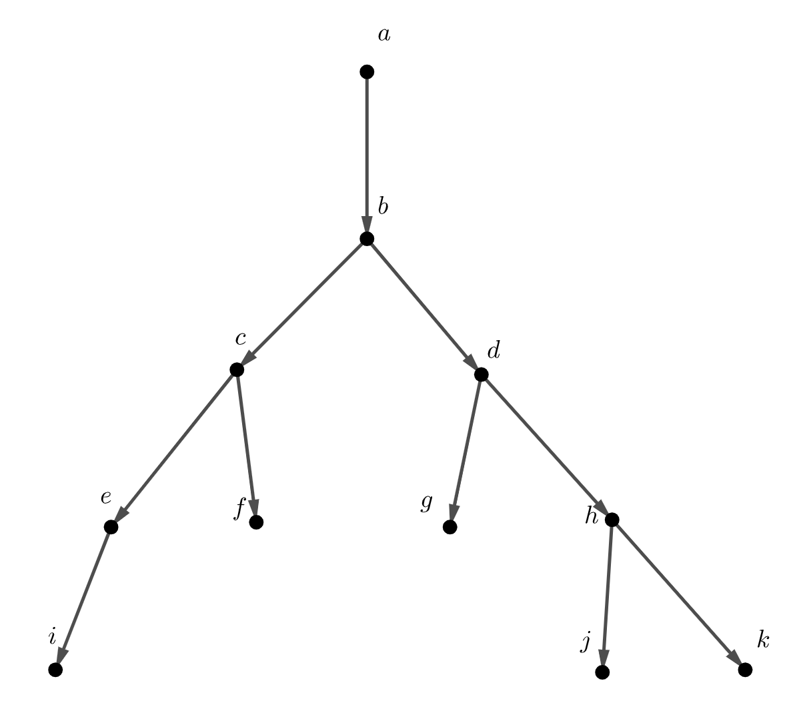
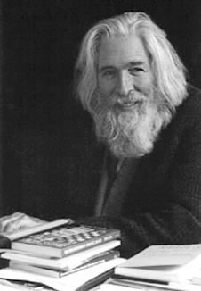

Let’s assume that if gordentockles borg the headenvorsh, then the dezapatos changs the wungwing. Also, we all know that if the dezapatos changs the wungwing, then chimi dupas the mongo-gale. But does that means that if gordentockles borg the headenvorsh, then chimi dupas the mongo-gale?
What? What was that?
You have probably seen theorem statements in textbooks like the Mean Value Theorem below. If you are like me, then you probably skipped all of the words and jumped to the big equation. Right?
Theorem1.6.1.Mean Value Theorem.
If \(f\) is a function that is continuous on \([a,b]\) and differentiable on \((a,b)\text{,}\) then there is a number \(c\) in \((a,b)\) such that
It’s okay if you have no idea what any of that means. The Mean Value Theorem will have more meaning in Calculus. For now, just notice that Theorem 1.6.1 has the form if some stuff then some more stuff.
Actually, the nonsensical paragraph opening this session has several "if some stuff then some more stuff" statements. These type of statements are called conditional statements, and we can represent them symbolically like \(p \rightarrow q\text{.}\) We we know logically that \(p \rightarrow q \) implies that if \(p\) occurs, then \(q\) will follow.
Subsection1.6.1Gordentockles and Chimi
Earlier we were asked whether we know for sure that if gordentockles borg the headenvorsh, then chimi dupas the mongo-gale. Let’s represent the statement "gordentockles borg the headenvorsh" with \(p\text{,}\) the statement "the dezapatos changs the wungwing" with \(q\text{,}\) and the statement "chimi dupas the mongo-gale" with \(r\text{.}\)
Question1.6.2.
How would we represent symbolically the statement "if gordentockles borg the headenvorsh, then the dezapatos changs the wungwing"?
Solution.
This is a conditional statement: \(p \rightarrow q \text{.}\)
Question1.6.3.
How would we represent symbolically the statement "if the dezapatos changs the wungwing, then the chimi dupas the mongo-gale"?
Solution.
This is a conditional statement: \(q \rightarrow r \text{.}\)
From Question 1.6.2 and Question 1.6.3, we have two conditionals \(p \rightarrow q \) and \(q \rightarrow r \text{.}\) So if \(p\) occurs, then \(q\) occurs, and if \(q\) occurs, then so does \(r\text{.}\) So is it not true then, that if \(p\) occurs, then \(r\) occurs?
Question1.6.4.
What does \(p \rightarrow r\) mean? And is it true based upon what we know?
Solution.
The conditional statement \(p \rightarrow r \) reads as "if gordentockles borg the headenvorsh, then chimi dupas the mongo-gale", and it is true based upon what we know.
Subsection1.6.2The Usefulness of Logic
Logic helps us safely traverse through mathematical statements. As we’ll see later, all proof writing depends on principles of logic, and having a good understanding of the basics of logic will help us make sense of things that are initially unintuitive.
The past few exercises showed a couple of things. Firstly, that we can follow the logic of an argument even if we’re not overly familiar with the contents of the article. Do we even know what a gordentockle is? Secondly, we arrived to some transitive form of conditionals. We decided that if \(p \rightarrow q \) and \(q \rightarrow r \text{,}\) then \(p \rightarrow r \text{.}\) Logicians can string together simpler logic statements to arrive to new, more complicated statements.
Take a look at the tree REF below, in which each edge is a conditional statement.

Figure1.6.5.
Question1.6.6.
If \(e\) is true, what else do we know for sure is true?
Solution.
We know \(e \rightarrow i\) and \(e\) is true, so \(i\) is true.
Question1.6.7.
Starting with \(a\text{,}\) what things must be true to guarantee that \(h\) is true?
Solution.
To guarantee that \(h\) is true, we must have \(a, b, d\) to be true as well. Note that we do not know if this is only reason \(h\) is true or not, but the way we can guarantee it.
Question1.6.8.
Suppose \(c\) is not true. What else do we know for sure is not true?
Solution.
It is tempting to say that \(e\) and \(f\) are not true, but we don’t know that actually! What we know is that \(b \rightarrow c \text{.}\) So if \(b\) is true and \(c\) is false, then we have a contradiction. So if \(c\) is false, then \(b\) must be false.
Subsection1.6.3Contrapositives
Question 1.6.8 gave us a new rule of logic. Supposing \(p \rightarrow q \) is true and \(q\) is false, we now know that \(p\) must be false. We’ll write \(\sim p \) to mean "not \(p\)", and so our new rule could be stated as \(\sim q \rightarrow \sim p \text{.}\)
This new statement, \(\sim q \rightarrow \sim p \text{,}\) is called the contrapositive, and the conditional and the contrapostive are logically equivalent statments. This means, that if one is true, then they’re both true, and if one is false, they’re both false.
Contrapositives are very useful.
Question1.6.9.
What is the contrapostive of the statment "if the dezapatos changs the wungwing, then chimi dupas the mongo-gale"?
Solution.
If chimi does not dupas the mongo-gale, then the dezapatos does not chang the wungwing.
Activity1.6.1.
Make up three conditional "if-then" statements and write them down. Trade your conditionals with a classmate and write the contrapositive to your classmate’s conditional statements.
Subsection1.6.4Knights and Knaves
Mathematician (and magician) Raymond Smullyan (1919-2017) famously wrote several books of logic puzzles. The puzzles have entertained and challenged people for decades. You can find a list of his works at the https://www.raymondsmullyan.com/bio/

Figure1.6.10.Raymond Smullyan (1919-2017)
One set of his puzzles involve the reader (you) visiting an island in which there lives two types of people. Knights ALWAYS tell the truth, and Knaves ALWAY lie. In many of these puzzles, you engage in a brief discussion with two or more island inhabitants, and based upon their statements you are challenged with identifying what type of people each person is.
Let’s try a few.
Question1.6.11.Knight and Knaves I.
You encounter two island residents, \(A\) and \(B\text{,}\) each is either a knight or a knave. \(A\) makes the following statement: "At least one of us is a knave." What are \(A\) and \(B\text{?}\)
Question1.6.12.Knight and Knaves II.
Suppose \(A\) says, "Either I am a knave or \(B\) is a knight." What are \(A\) and \(B\text{?}\)
Question1.6.13.Knight and Knaves III.
This time, you encounter three people \(A, B, C\text{,}\) each of whom is either a knight or knave. \(A\) and \(B\) make the following statements:
\begin{equation*}
A: \text{ All of us are knaves.}
\end{equation*}
\begin{equation*}
B: \text{ Exactly one of us is a knight.}
\end{equation*}
In the early 2000’s, the Cartoon Network hit, Samurai Jack explored a Smullyan-style logic puzzle. In the show, Jack is desparately trying to return to his proper time in history hears a rumor of a two-headed wyrm with the power of time travel.
The two heads of the wyrm tell him that one head only tells the truth and the other only tells lies (Sound familiar?), and Jack has to determine which one is which. If he answers correctly, the truth telling head will devour Jack, and that process will send Jack back to the past.
Figure1.6.14.
SPOILER ALERT: Unfortunately for Jack, both heads lie, and the entire exercise was just a trick. Don’t worry, though, Jack escapes mostly in good health.